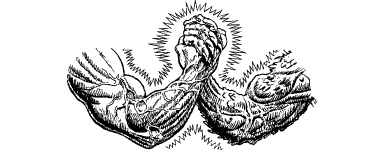

345
Serocca blinks away her tears and forces herself to concentrate on the matter in hand. Again the image fades from the table and a new one takes its place: a picture of forested hills and steep-sided valleys. ‘This is where the Lorestones emerged from the Shadow Gate,’ she says, her voice now calm and controlled. ‘I detected their presence immediately, for the power they radiate is extraordinary.’
‘Where is this place?’ you ask.
‘It is the Nahgoth Forest, close to the border with Meledor. I estimate that the Lorestones lie within a few hundred yards of Tolakos, the ancient burial ground of the Meledorians,’ she replies, but with caution in her voice.
‘Is this not good news?’ you ask, relieved to know at last where the objects of your quest are situated.
‘Yes, it is, but for the struggle now taking place in the region. The Meledorians are locked in battle against the forces of the Chaos-master, who is determined to claim all of the Nahgoth for himself. Tolakos is but a few leagues from where the fighting is fiercest.’
{kind=link}

‘Then I must retrieve the Lorestones quickly,’ you say, rising from your seat in your eagerness to press on with your quest.
‘Indeed you must, but it would benefit you nought if you were to reclaim them and then be unable to return to your home world for the lack of knowing where to go. Be patient a little longer, Lone Wolf, and I shall show you where, in all this vast region of the Daziarn, you can find the one Shadow Gate that leads to Magnamund.’